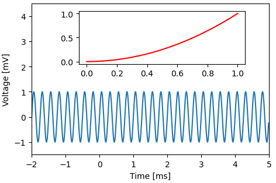
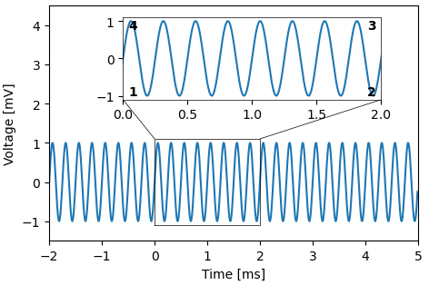

Module plottools.insets
Insets made easy.
Axes member functions
inset(): add an inset in relative axes coordinates. zoomed_inset(): add an inset for displaying zoomed-in data. 
Install/uninstall insets functions
You usually do not need to call these functions. Upon loading the insets
module, install_insets() is called automatically.
install_insets(): install functions of the insets module in matplotlib.uninstall_insets(): uninstall all code of the insets module from matplotlib.
Functions
def inset(ax, *pos)-
Add an inset in relative axes coordinates.
Parameters
ax:matplotlib axes- Axes to which the inset is added.
pos:sequenceoffloats- Position of the inset in axes coordinates (x0, y0, x1, y1),
each ranging between 0 and 1 for position inside
ax.
Returns
axi:matplotlib axes- Axes of the inset.
Examples
import matplotlib.pyplot as plt import plottools.insets fig, ax = plt.subplots() x = np.arange(-2.0, 5.0, 0.01) y = np.sin(2.0*np.pi*4.0*x) ax.plot(x, y) ax.set_xlim(-2.0, 5.0) ax.set_xlabel('Time [ms]') ax.set_ylim(-1.5, 4.5) ax.set_ylabel('Voltage [mV]') axi = ax.inset(0.2, 0.6, 0.9, 0.95) x = np.linspace(0, 1, 50) axi.plot(x, x**2, 'r') plt.show() def zoomed_inset(ax, pos, box, lines=None, **kwargs)-
Add an inset for displaying zoomed-in data.
The limits of the inset are set according to
box. Additionally a frame is drawn around the zoomed-in region and optionally lines connecting the zoommed-in region with the inset.Do not change the limits of
axafter calling this function.Parameters
ax:matplotlib axes- Axes to which the inset is added.
pos:sequenceoffloats- Position of the inset in axes coordinates (x0, y0, x1, y1),
each ranging between 0 and 1 for position inside
ax. box:sequenceoffloats- Zoomed in region in data coordinates (x0, y0, x1, y1) used for drawing a frame and setting the limits of the inset.
lines:sequenceoftwo-tuples- Additional lines to be drawn from the zoomed-in region to the inset. Each element in the list specifies a line by a tuple of two numbers. The first number specifies the corner on the zoomed region where the line starts, the second number the corner on the inset where the line ends. The corners are counted anti-clockwise and the bottom left corner has index '1'.
kwargs: Passed on to ax.plot() for plotting the box around the zoomed-in region. If not otherwise specified, color is set to black and linewidth to one.
Returns
axi:matplotlib axes- Axes of the inset.
Examples
import matplotlib.pyplot as plt import plottools.insets fig, ax = plt.subplots() x = np.arange(-2.0, 5.0, 0.01) y = np.sin(2.0*np.pi*4.0*x) ax.plot(x, y) ax.set_xlim(-2.0, 5.0) ax.set_xlabel('Time [ms]') ax.set_ylim(-1.5, 4.5) ax.set_ylabel('Voltage [mV]') axi = ax.zoomed_inset([0.2, 0.6, 0.9, 0.95], [0.0, -1.1, 2.0, 1.1], [(4, 1), (3, 2)], lw=0.5) axi.plot(x, y) plt.show() def install_insets()-
Install insets functions on matplotlib axes.
This makes
inset()andzoomed_inset()available as member functions for matplib axes.This function is called automatically upon importing the module.
See Also
def uninstall_insets()-
Uninstall insets functions from matplotlib axes.
Call this code to disable anything that was installed by
install_insets().See Also
def demo()-
Run a demonstration of the insets module.